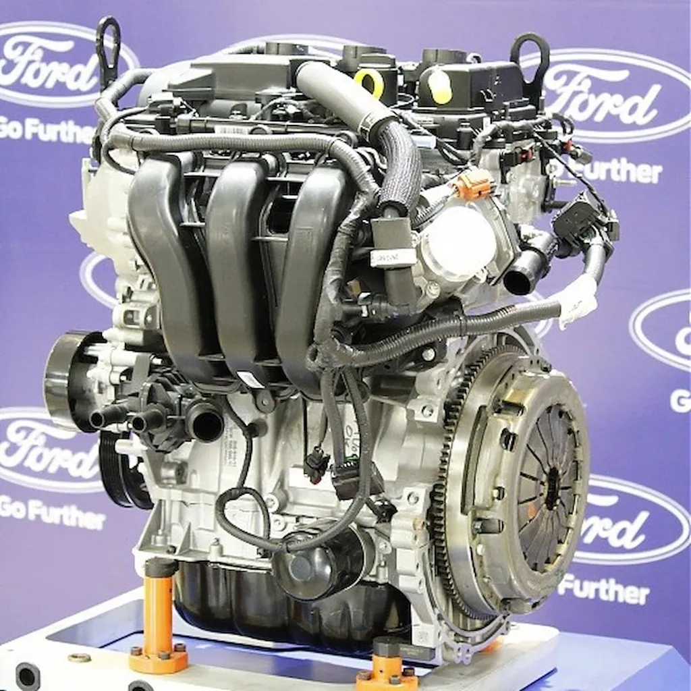

Motorul Ford EcoBoost 1.5L - 3 cilindri

Motorul Dragon 1.5L EcoBoost este un motor pe benzină cu trei cilindri în linie, turboalimentat, produs de Ford Motor Company. Acesta este utilizat pentru echiparea automobilelor din clasa subcompactă și compactă, precum și a vehiculelor utilitare de tip CUV (crossover).
Motorul are o configurație DOHC (dublu arbore cu came în chiulasă) și reprezintă o evoluție a arhitecturii Ford „Fox”. Din anul 2014, acest motor face parte din familia de motoare turbo Ford EcoBoost.
Varianta de 1.5 litri este o dezvoltare directă a motorului EcoBoost de 1.0 litru. Pentru a asigura un consum redus și eficiență ridicată, motorul utilizează tehnologia de dezactivare a cilindrilor, care permite oprirea temporară a unui cilindru în anumite condiții de funcționare. Construcția este realizată integral din aluminiu, având galeria de evacuare integrată în chiulasă și o turbină cu inerție redusă și geometrie variabilă.
De asemenea, motorul combină injecția indirectă (în galerie) cu injecția directă de combustibil, pentru a optimiza performanța și consumul.
Motorul 1.5L EcoBoost Dragon echipează modele precum:
• Ford Escape
• Ford Fiesta ST
• Ford Focus
Acest motor oferă un echilibru foarte bun între putere, consum redus și dimensiuni compacte, fiind potrivit pentru vehiculele moderne orientate spre eficiență și performanță.
Prezentare generală
| Caracteristică |
Valoare |
| Familie motor |
EcoBoost |
| Cilindree |
1.5 litri |
| Aspirare |
Turbo |
| Configurație și cilindri |
În linie, 3 cilindri |
| Orientare motor |
Transversală |
| Configurație supape |
DOHC cu distribuție variabilă (VCT) |
| Loc asamblare |
Craiova, România |
| Predecesor |
Ford Sigma |
| Succesor |
Nu există |
Specificații tehnice
| Caracteristică |
Valoare |
| Aliaj |
79.0 mm |
| Cursă piston |
76.4 mm |
| Raport de compresie |
10.0 : 1 |
| Putere maximă |
197 CP la 6000 rpm |
| Cuplu maxim |
214 Nm la 1600 rpm |
| Chiulasă |
Aluminiu turnat |
| Bloc motor |
Aluminiu turnat |
| Acționare arbore cu came |
Curea |
Inapoi la pagina principala